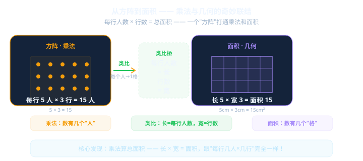

Gallery
v0.1.0 · skill v7.14.0
运动会要排方阵了！每行6人，排5行——总共多少人？如果每人站在1平方米的格子里，这个方阵占多大地方？

运动会排方阵：每行6人×5行=30人——乘法，秒算。
数学课问面积：长6cm×宽5cm=？——犹豫了……
等等——这不就是同一件事吗？
And 结构完全一样。But 课本当两件事教。Therefore 这节课把它们打通。
先选一个你关心的问题。后面的例子、提示和 AI 学伴都会围绕这个问题来帮你推进。
选择或输入后，本课会围绕你的问题展开。
3道题，帮你看看自己目前的水平。不会也没关系，学完再测一次！
运动会上，同学们排成一个长方形方阵。每行人数都一样多，行与行对齐——整整齐齐！
已知：每行 6 人，共 5 行。总共多少人？
现在把每个同学替换成一个1厘米×1厘米的小方格……
每行 6 个"人"
共 5 行
总人数 = 6 × 5 = 30
数的是"有几个东西"
每行 6 个"小方格" → 长 = 6 厘米
共 5 行 → 宽 = 5 厘米
总面积 = 6 × 5 = 30 平方厘米
数的是"占了多少地方"
拖动下面的滑块，改变每行人数（长）和行数（宽），观察方阵和方格的变化！
每行人数 × 行数
= 总人数
数"有几个东西"
每行人数 = 长
行数 = 宽
总人数 = 面积
长 × 宽
= 面积
数"占了多少格"
1. 每行 7 人，排了 4 行，总共多少人？
2. 画一个长 5 厘米、宽 3 厘米的长方形，满铺 1cm×1cm 小方格，数一数有几格？
3. 一块长方形瓷砖，长 8cm，宽 6cm，面积是多少平方厘米？
1. 学校操场要铺草皮，长 30 米、宽 20 米，如果用 1m×1m 的草皮方块，需要多少块？
2. 一个长方形长增加 2 厘米，宽不变。面积增加多少？（用方阵模型想想看）
3. 已知面积 = 24 cm²，长 = 6 cm，宽是多少？
1. 用 24 个小正方块（边长 1cm），你能拼出几种不同的长方形？写出每种的长和宽。
2. 挑战：长和宽都是整数厘米，面积等于 36 cm² 的长方形有几种？
3. 一个 L 形图形，可以"切"成哪两个长方形来算面积？
长 5cm、宽 3cm → 面积 15 cm²，不是 15 cm！面积用"平方单位"，就像数的是"格子的个数"。
周长是"绕一圈"的长度（长+宽）×2；面积是"铺满"的格子数（长×宽）。别搞反！
遇到面积问题，先画一个方阵/方格图！看图比空想准得多。方阵就是你最可靠的"面积计算器"。
学完了，再来测一次！和前测对比，看看进步了多少。
面积公式不是"背"出来的，是从方阵模型里推理出来的。以后忘了公式，就想想"每行几人×几行"！
下一课预告：周长 = (长+宽)×2，跟面积有什么不同？
本节点的前置、后续和同域知识。